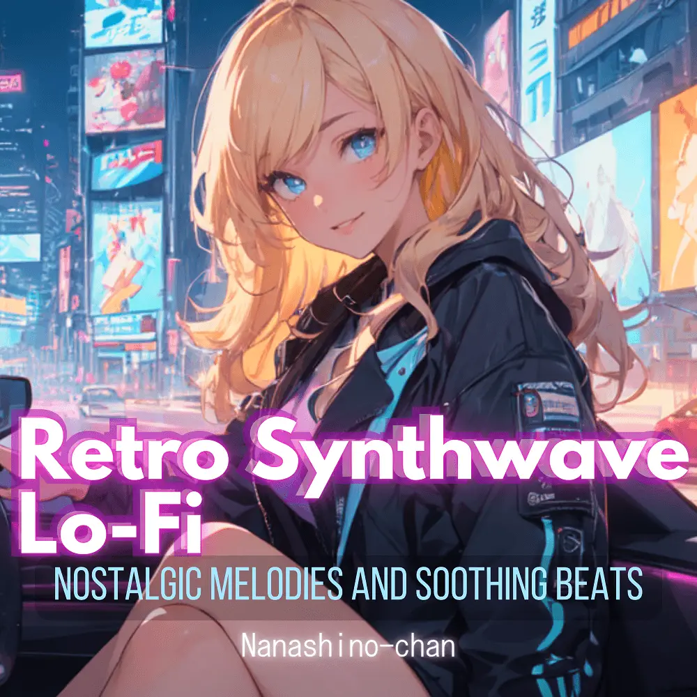

Synthwave · Lo-Fi · Instrumental
Retro Rewind: Nostalgic Synthwave Lo-Fi
Nanashino-chan
Explore Retro Rewind: Nostalgic Synthwave Lo-Fi by Nanashino-chan: 25 instrumental tracks spanning Synthwave / Lo-Fi / Instrumental. Start with Starlight Echoes / Neon Dreams, preview the collection and find your favorites on streaming services.
2025-02-15 · Released · 25 tracks · Instrumental
Preview the album
The jacket stays here until you choose a track. Playback uses YouTube.
YOUTUBE PREVIEW
Choose a track to listen
The jacket stays here until you choose a track. Playback uses YouTube.
If playback is unavailable, open the album or track on the streaming service.
Find this album on streaming services
Links marked “search” open search results. Select the album or track on the service.
Track list 25
- 01Starlight Echoes
- 02Neon Dreams
- 03Midnight Journey
- 04Retro Reflections
- 05Electric Horizon
- 06Crystal Waves
- 07Velvet Sky
- 08Moonlit Drive
- 09Digital Mirage
- 10Cinematic Pulse
- 11Luminous Nights
- 12Eternal Glow
- 13Radiant Skyline
- 14Galactic Whispers
- 15Synthwave Serenade
- 16Vaporwave Vibes
- 17Chasing the Sunset
- 18Holographic Dreams
- 19Aurora Lights
- 20Cosmic Reflections
- 21Interstellar Beats
- 22Midnight Stroll
- 23Twilight Groove
- 24Echoes of the Past
- 25Final Fade
Find a sound for your next post
Copy “Nanashino-chan + track title” and paste it into your social app’s music search. Availability depends on your region and account. Copying the name does not grant usage rights.